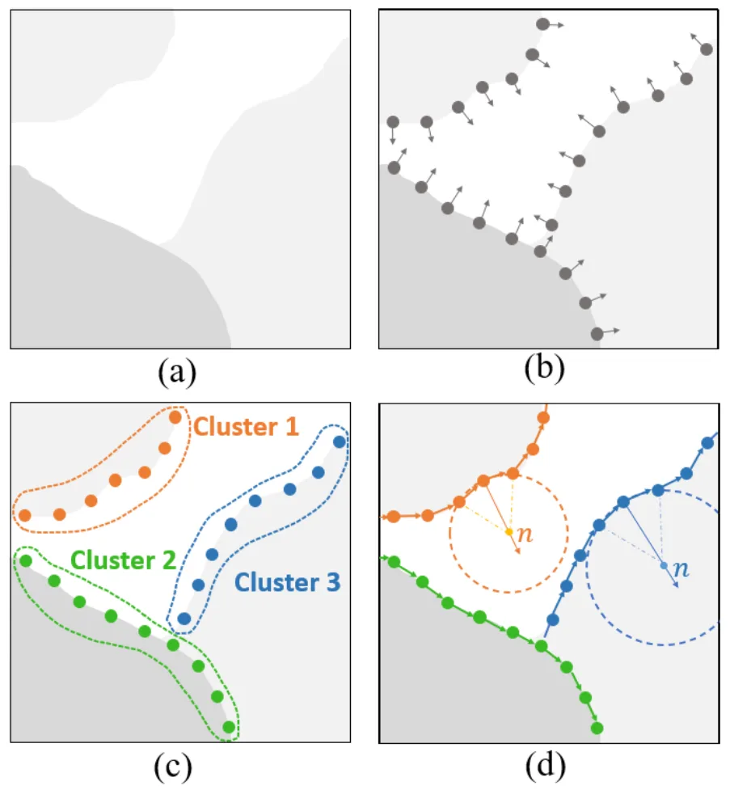
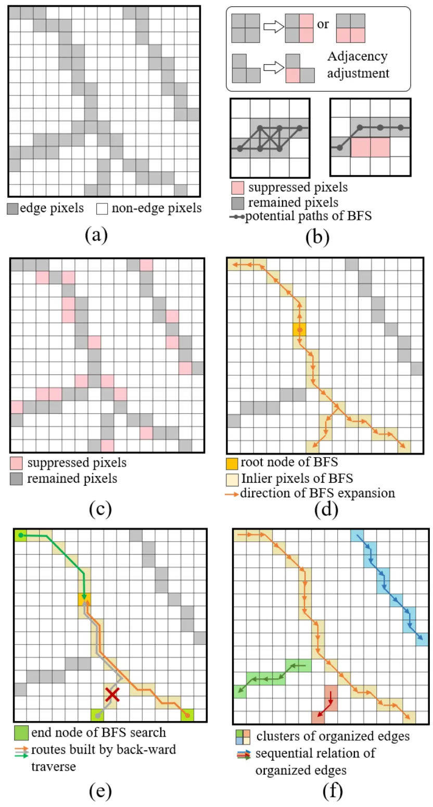
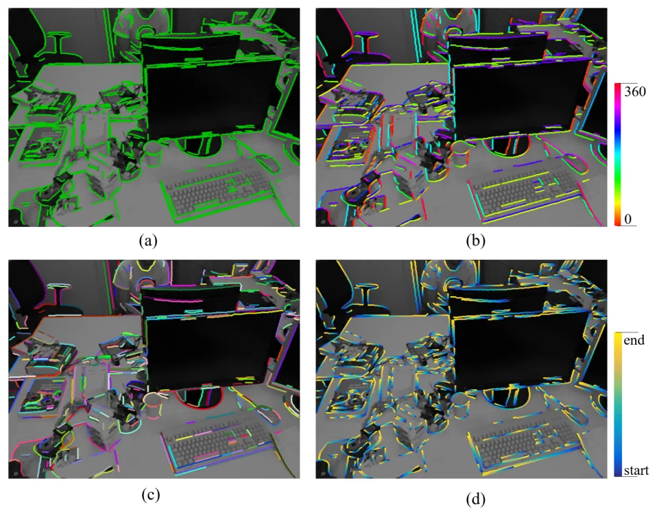
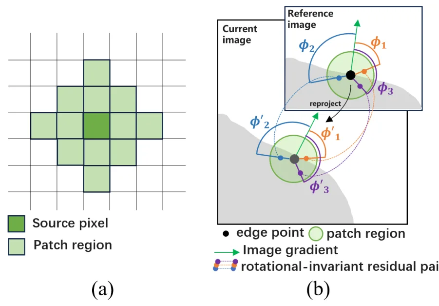
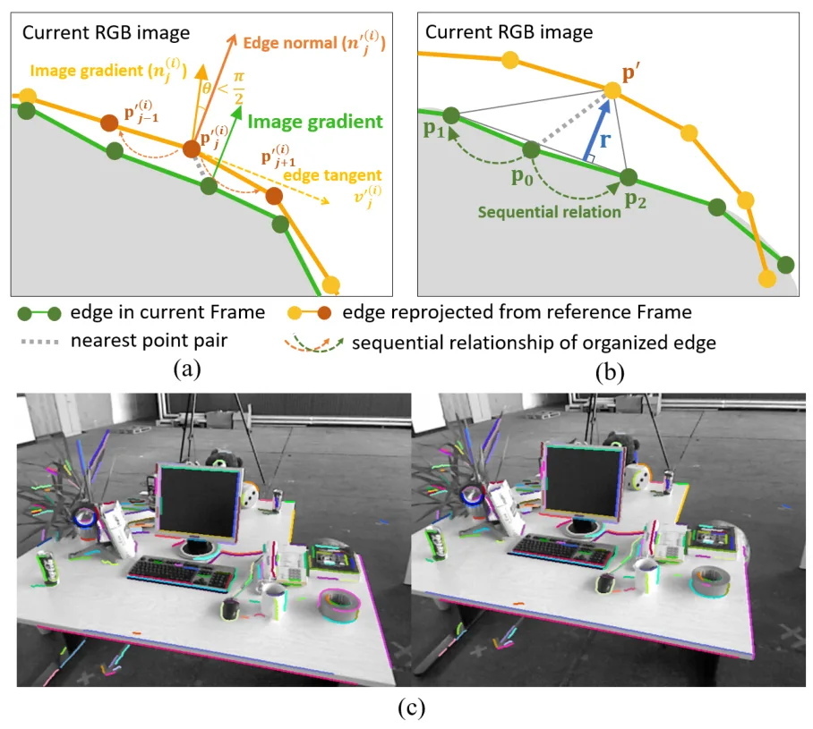
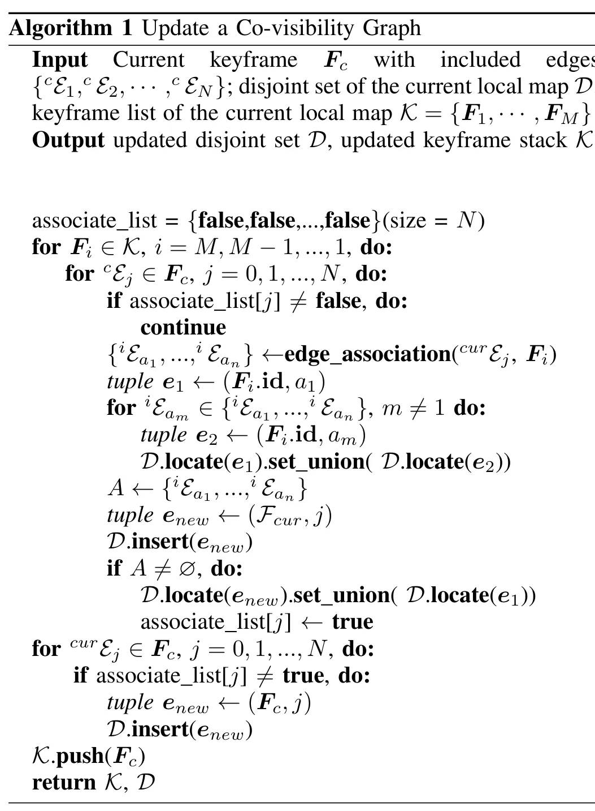

ROEVO：基于 RGB-D organized edge 特征的鲁棒视觉里程计ROEVO: Robust Organized Edge Feature-based Visual Odometry Using RGB-D Cameras
当天唯一直接面向视觉里程计的论文，方法同时覆盖特征表示、关联、配准与局部 BA，且代码公开；但结果以室内 RGB-D 为主，对弱边缘、动态场景和深度噪声的鲁棒性仍需验证。
一句话工作总结
将离散边缘组织为可跨帧关联的顺序结构，以 edge-wise registration 和保形分解式 BA 完成 RGB-D 视觉里程计。
摘要
本文提出一种只使用 organized edge features 的 RGB-D 视觉里程计系统。方法把离散边缘像素转换为有顺序的 clusters，以更充分保留纹理和结构，并通过边级跨帧关联建立 co-visibility graph。tracking 阶段使用 edge-wise residuals 实现稳健、高精度的帧间配准；joint optimization 阶段引入 shape-preserving edge fitting 和 organized-edge Bundle Adjustment，把传统 BA 分解为 fitting 与 registration，以保持结构完整性。作者称其在室内环境中兼具高效 tracking 与精确 local mapping，准确性和鲁棒性达到或超过现有方法，并已公开源码。
This work presents a visual odometry (VO) system that leverages image edge features. Edges are spatially expressive cues commonly present across diverse environments, offering rich textural and structural information. However, existing edge-based VO methods often fail to fully exploit this potential. To this end, we introduce a novel feature representation termed \textit{organized edges}, which transforms disjoint edge pixels into sequentialized clusters, enabling more effective retention and utilization of the underlying textural and structural information. Another nice property of this formulation is that organized edges can perform edge-level association across multiple frames, enabling the establishment of a co-visibility graph. To achieve precise and efficient pose estimation, we propose a range of particularly designed tracking and joint optimization methods based on the characteristics of organized edges. For tracking, we formulate edge-wise rather than pixel-wise residuals to achieve robust and accurate inter-frame registration. For joint optimization, we introduce a novel shape-preserving edge-fitting method and an organized edge-based Bundle Adjustment (BA) approach, which decomposes the traditional BA problem into fitting and registration to preserve the structural integrity. Based on these novel techniques, we develop a complete VO system that exclusively employs organized edge features, achieving efficient tracking and precise local mapping. Extensive experiments demonstrate its accuracy and robustness in indoor environments, outperforming or achieving comparable performance to state-of-the-art methods. The source code is publicly available at https://github.com/liumingrui814/ROEVO
中文解读摘录
- 价值：把离散 edge pixels 顺序化为 organized edges，并以边级跨帧关联构建 co-visibility graph，试图同时保留纹理和结构信息；这是今天唯一直接面向里程计的新增方法。
- 方法与结果：tracking 使用 edge-wise residuals 而非 pixel-wise residuals；局部优化提出 shape-preserving edge fitting 和 organized-edge BA，把传统 BA 分解为 fitting 与 registration。摘要称室内实验达到或超过多种 SOTA，同时保持高效 tracking 与精确 local mapping。
- 关注点：需核查边缘组织与关联的计算复杂度、弱结构或重复结构环境的退化、深度噪声和动态边缘影响，以及与 point/line/direct RGB-D VO 在统一数据集和硬件上的对比。
- 链接：arXiv · PDF · 代码
图表/页面预览

{kind=link}

{kind=link}

{kind=link}

{kind=link}

{kind=link}

{kind=link}
